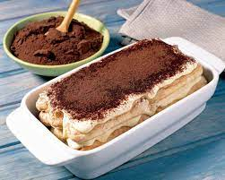

Tiramisu

Duration: 25 minutes
Description
Tiramisu is a no-bake Italian dessert made with ladyfingers dipped in coffee and
layered with mascarpone cheese (a rich Italian cream cheese) whipped with sugar
and egg yolks to create the custard or cream and topped with cocoa powder.
Tiramisu in Italian means 'pick me up' and after one bite, I am sure everyone will
agree.
Ingredients
- expresso caffe
- mascarpone
- eggs
- sugar
- dark brandy
- lady fingers (Savoiardi)
- minichocolate chips
- cacao powder
Steps
- First, you’ll need to brew a pot of espresso coffee and set it aside to cool, or
pour it into a bowl and place it into your freezer to get it COLD.
- Then prepare to make the luscious cream: separating the eggs yolks from the egg
whites in different bowls; however, you will need 6 egg yolks and only 4 egg whites
for this recipe.
- Make the cream: beat egg yolks with sugar for a few minutes and beat them until
they turn into a light pale yellow color, and a creamy thick mixture. Then beat in
the mascarpone cheese and set aside.
- Beat egg whites until they form stiff peaks and gently fold the egg whites into the
creamy cheese mixture. You have to take your time and slowly incorporate the whipped
egg whites. You want to keep as much of the air in the whipped cream as possible.
- Assambling tiramisu: pour (cooled) espresso coffee into a small bowl and add in dark
brandy. Open a package of Italian ladyfinger cookies, and dip each cookie into the
coffee and layer them at the bottom of the dish.
- Do not oversoak the cookies or let them get soggy, it will ruin the dessert. Only need
to lightly dip them.
- Set a single layer of coffee-soaked ladyfingers on the bottom of your baking dish. You
can use an 8 x 8-inch, 9 x 9-inch dish, or an 8 x 12-inch dish.
- Cover your first layer of cookies with the cream mixture ( about 1/2 the cream mixture),
and spread it evenly. Then dust on top with cocoa powder, scatter with mini chocolate chips.
- Add the second layer of coffee-soaked cookies on top. Cover the cookies with the second layer
of the cream (the remaining half of the cream mixture). Then top again with a dust of cocoa
and sprinkle with mini chocolate chips. I prefer to lightly dust the cocoa, but you can give
it a thick layer of cocoa powder if you prefer.
- Cover with clear wrap and chill this dessert in the refrigerator for a few hours, at least 6
hours or more before serving.